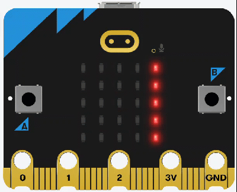
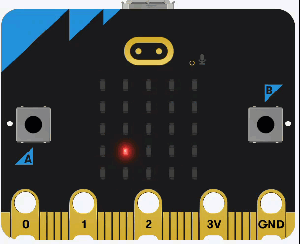
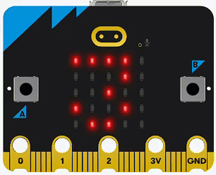
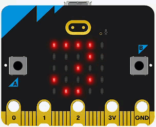
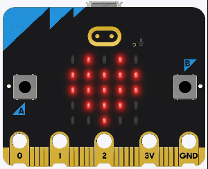
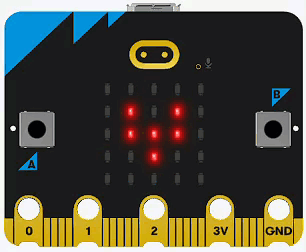
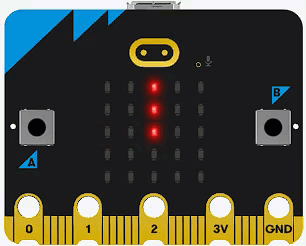
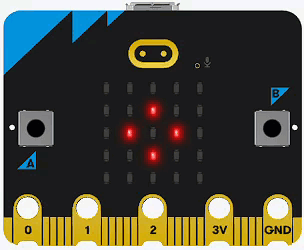
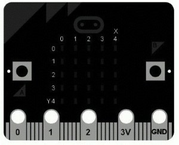
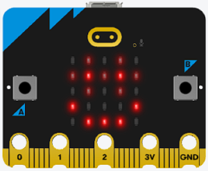

Micro:bit Display¶
We have already used the micro:bit display in our first program. In this section we will learn more of it’s features.
Documentation
Througout this tutorial, links to the official documentation will be provided in this green callouts.
All the display functions can be found at the BBC micro:bit MicroPython display documentation.
Text¶
Scroll¶
scroll function
microbit.display.scroll(text, delay=150, \*, wait=True, loop=False, monospace=False)
Full details can be found at the BBC micro:bit MicroPython display.scroll documentation.
Our first program used the scroll() function to make a string scroll across the display.
1# first program
2
3from microbit import *
4
5while True:
6 display.scroll("Hello world!")
7 display.show(Image.HEART)
8 sleep(2000)

Although our example uses strings, the scroll() function can also display floats, integers and Boolean values.
Show¶
show function
microbit.display.show(image)
Full details can be found at the BBC micro:bit MicroPython display.show documentation.
The other option to display characters is the show() function.
Before we can run the code below, we need to:
stop the micro:bit by clicking on Thonny’s stop button
navigate back to the micro:bit directory and create a new directory called display_show.
navigate to the display_show directory.
Create a new file called main.py and add the code below.
1# display.show example
2
3from microbit import *
4
5while True:
6 display.show(3.14159, delay=500)
7 display.clear()
8 sleep(1000)
Predict in detail what you think the program will do. Make sure you are specific in your prediction (“pause for 2 seconds” is better than just “pause”), then run the program.

Code explaination
line 1 → comment identifying the project.
line 3 → imports all the commands from the
micropythonlibrary.line 5 → sets up the endless loop.
line 6 →
display.show()displays one character at a time.3.14159→ message to be displayed. This can be a string, integer, float or Boolean.delay=500→ puts a 500 millisecond pause after each character
line 7 →
display.clear()changes the value of each pixel to0effectively clearing the screen.line 8 → waits 1000 milliseconds before going back to the top of the loop.
Time to modify the code and see what happens:
Text Exercises¶
Can you make it display a different message? For example:

Can you change the time between each character? For example:

using the details in the display.show docs can you make display the same message without the
while Trueloop?

Images¶
micro:bit Images
The micro:bit has a wide range of pre-set images that can be used with the show method.
You can also use the display.show function to display present images.
Again, since we are making a new program, we need to create a new folder called display_images in the micro:bit folder. Then create a new main.py file.
Then add the following code to the file.
1# display.image example
2
3from microbit import *
4
5while True:
6 display.show(Image.HEART)
7 sleep(1000)
8 display.show(Image.HEART_SMALL)
9 sleep(1000)
Predict in detail what you think the program will do, remember specific, then run the program.

Code explaination
line 6 →
display.show(Image.HEART)shows a heart on the displayline 8 →
display.show(Image.HEART_SMALL)shows a small heart on the display
Time to modify the code:
Image Exercises¶
Can you change the heartbeat animation to reflect an actual heartbeat? Like this?

Can you make the display show a clock face progressing from 1 to 12? Like this:

Can you make the display show a square spinning? Like this:

Custom¶
set_pixel function
microbit.display.set_pixel(x, y, value)
Full details can be found at the BBC micro:bit MicroPython display.set_pixel documentation.
You can also directly control the individual LEDs on the display. The image below shows the coordinate numbers for each of the LEDs:
top left →
(0.0)bottom right →
(4,4)

Each pixel can be set to a value from 0 (off) to 9 (brightest)
To explore this we will make a new program. Create a new folder called display_custom in the micro:bit folder. Then create a new main.py file.
Add the code below, save t an then run in on the micro:bit.
1# display.custom example
2
3from microbit import *
4
5display.clear()
6
7while True:
8 for x in range(5):
9 for y in range(5):
10 for level in range(0,10):
11 display.set_pixel(x,y,level)
12 sleep(10)
13 for level in range(9,-1,-1):
14 display.set_pixel(x,y,level)
15 sleep(10)
Predict in detail what you think the program will do, remember specific, then run the program.

Code explaination
This code is a bit more complicated.
first the structure:
two
forloops nested inside aforloop which is also nested inside aforloop, which is nested inside the infinitewhileloop.the coordinate loops:
line 8
forloop → increments thexvalue from0to4line 9
forloop → increments theyvalue from0to4for each increment of thexvaluethe coordinates produced by these two loops will proceed:
for the
xvalue of0→yvalues0to4for the
xvalue of1→yvalues0to4for the
xvalue of2→yvalues0to4for the
xvalue of3→yvalues0to4for the
xvalue of4→yvalues0to4
the display loops:
line 10
forloop → increase the LED value from0to9(off to brightest)line 13
forloop → decrease the LED value from9to0(brightest to off)the second
-1in range(9,-1,-1) → reverse order
Time to modify the code:
Custom Exercises¶
What happens if you remove both of the
sleep(10)statements? Why do you think this happens?Can you change the code so it moves across the rows rather than down the columns?

Can you create this smiley face with glasses? The Image class might help

Other Functions¶
There are other display related functions such as:
get_pixel → returns the brightness of a given pixel
on → turns the display on
off → turns the display off
is_on → indicates if the display is on
read_light_level → gives a reading of the ambient light.